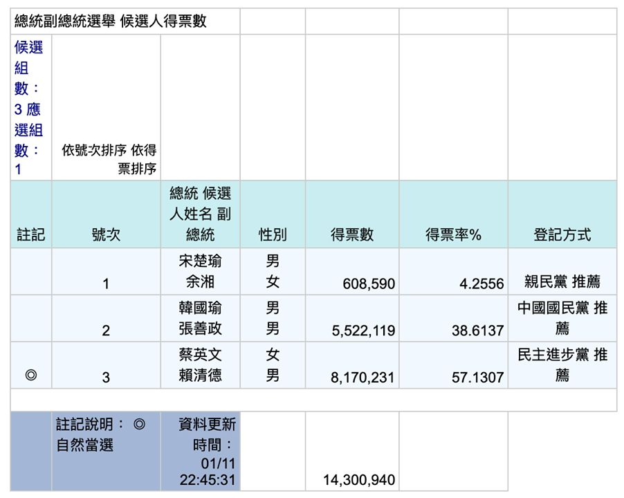

線上線下行銷實驗
沒有樁腳時，臉書、路線規劃與量入為出的廣告，是素人僅有的工具箱。

台灣開票效率驚人：總統有效票約 1430 萬，從投到大致開完約半天節奏，島嶼很熟練。
線上：臉書與部落格先行，11 月文宣、12 月才大量夜市市場。Google 退出政治廣告後，精準投放更難，Line 與網頁廣告不準，最後常只剩臉書。
線下：看板×1（六千元、鄰居陽台）、面紙約三萬包、手拿板、志工自有車與我的特斯拉改裝宣傳——監察院還不准把車列為支出。我曾想用無人機當廣告車，音量不夠作罷。
Google 地圖九年前就用於工程路線；拿來規劃拜票與掌握里民結構，是數字決策，不是感覺。
選舉花錢，但不怎麼花錢也能選。真正稀缺的是同時具備政見、行銷與募款的人——而那樣的人往往有更好人生選項。這正是我想留下的觀察：降低一流人才入場的羞辱成本。

來源: 台灣大未來 — 今日瑞士，明日台灣 — 張渝江 · 9.2 選後分析